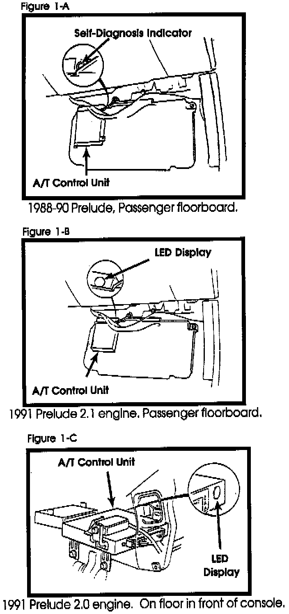
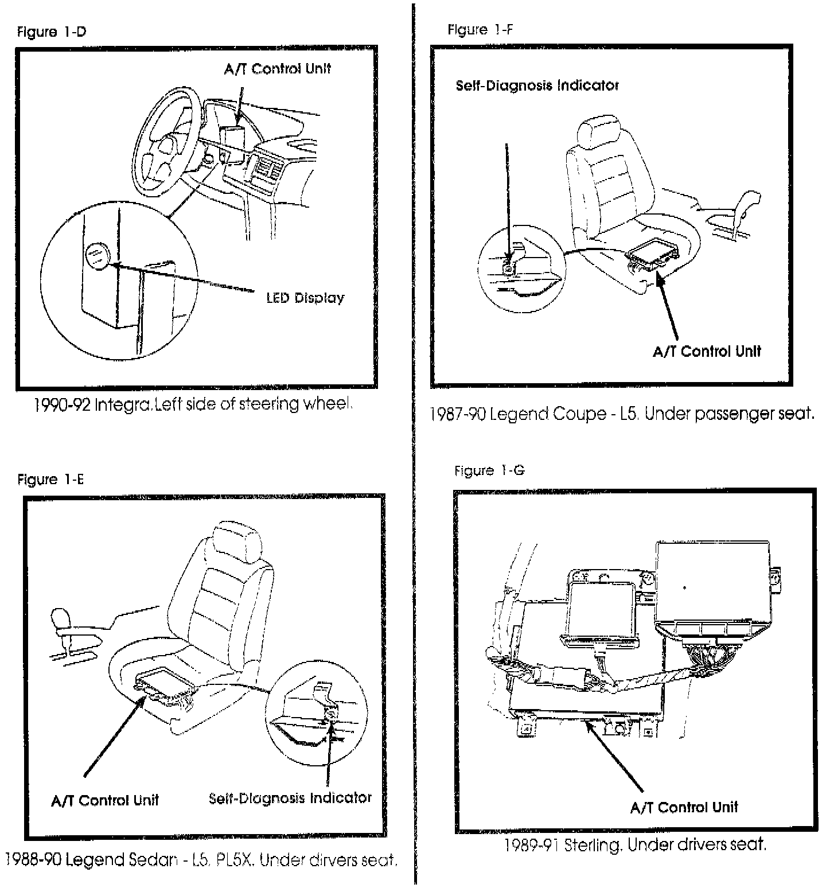
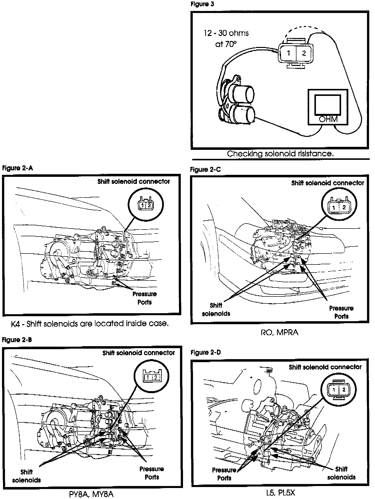
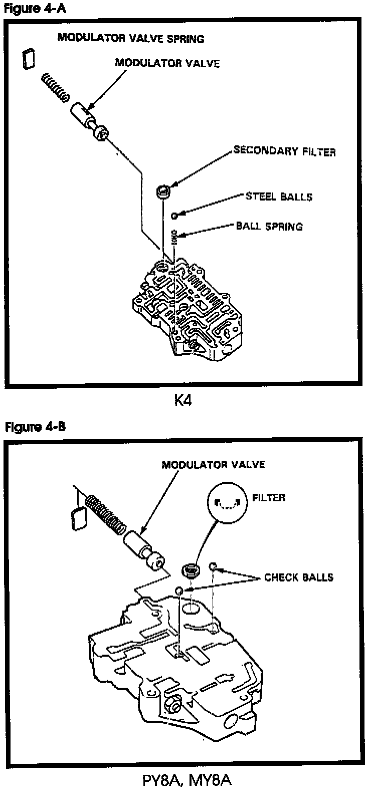
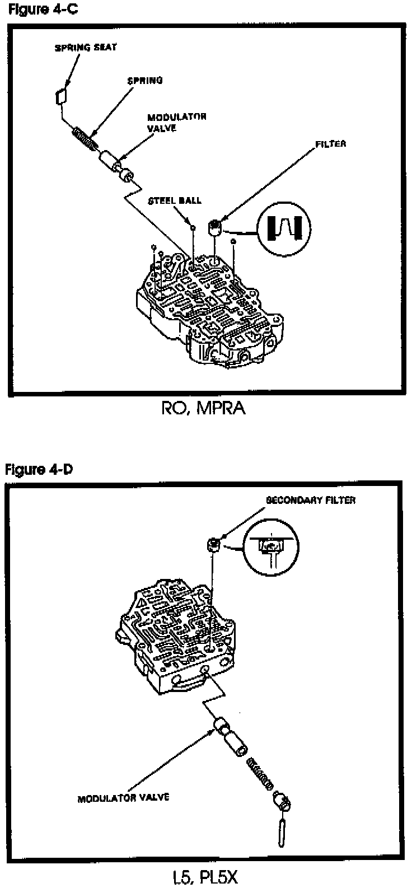

A/T - Erratic Shifts, No Kickdown, Wrong Gear Starts
Technical Bulletin # 226TRANSMISSION: K4, PY8A, MY8A L5, PL5X, RO, MPRA,
SUBJECT: Erratic shifts, no kickdown, wrong gear starts
APPLICATION: Acura, Honda Sterling
DATE: Jan 1994
Erratic Shifts, No Kickdown,
Wrong Gear Starts
1988-89 Honda Prelude - K4
1990 Honda Prelude - PY8A
1991 Honda Prelude - MY8A
1987 Acura Legend Coupe - L5
1988-89 Acura Legend Coupe and Sedan - L5
1990 Acura Legend Coupe and Sedan - PL5X
1990 Acura Integra - RO
1991-92 Acura Integra MPRA
1989-90 2.7 Sterling - L5
1991 2.7 Sterling PL5X
Erratic shifts, no kickdown, wrong
gear starts, early shifts, skips second
on medium to W.O.T., upshifts or skips
3rd.
All of the above conditions are usually caused by shift solenoid related problems. The solenoids may be restricted with metal particles or debris causing shift malfunctions. The modulator valve (which hydraulically feeds the solenoids) may be stuck open, flooding the solenoids with more fluid than they can exhaust. Follow the test below to determine the cause of the problem.
[Step 1]
Road test the vehicle on the road (not on the rack) to verify the concern. LEAVE THE ENGINE RUNNING. If the check engine light is blinking check the ENGINE computer for codes and correct as necessary. DO NOT rely on the 'S3' light on the instrument panel to blink (indicating TRANSMISSION codes). Inspect the transmission computer for blinking codes BEFORE STOPPING THE ENGINE. Correct as necessary.


See figures 1A through 1G for transmission computer locations.
[Step 2]

Stop the engine. Disconnect the connector to the shift solenoids (Figures 2A THROUGH 2D).
Check the resistance of each shift solenoid terminal to ground (Figure 3). The resistance should be 12-30 ohms at 70°F. Replace as necessary.
[Step 3]


Attach a 0-100 psi pressure gauge to shift solenoid A and B for the modulator pressure ports (Figure 2A through 2D). If only one gauge is available, attaching it to one part at a time will work fine. Place shift lever in park and start the engine. Check the pressure on both parts. It should be 70-95 psi. If it is over 95 psi the modulator valve is stuck. See Figures 4A through 4D.
[Step 4]
With the engine running connect one end of a jumper lead to the positive terminal of the battery and the other end to BOTH solenoid terminals in the connector. The pressure should drop quickly to under 6 psi. If the pressure is above 6 psi or drops slowly, replace the shift solenoids.